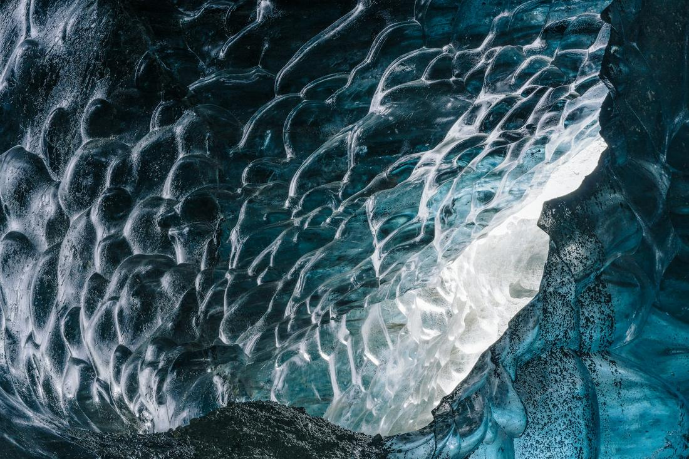
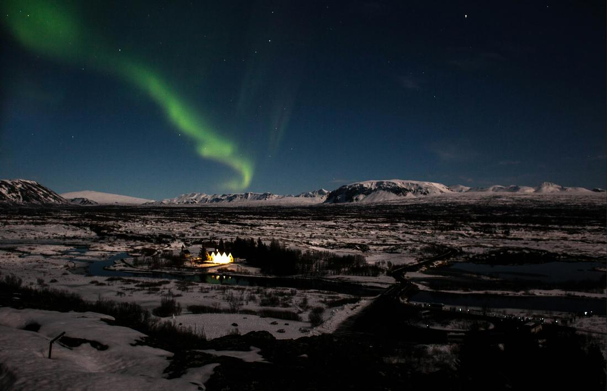

Glaciers, geysers, and the Northern Lights — Iceland packs a lifetime of 'wow' into one trip.
Iceland is one of those destinations where the land itself feels alive — geysers erupting on schedule, glaciers calving into lagoons, volcanic craters sitting quietly next to green farmland. It's raw and dramatic in a way that's hard to find anywhere else, and yet Reykjavik makes it easy, with direct flights, a walkable capital full of great food, and a country small enough that you can genuinely see a huge range of it in a week or less. As your travel advisor, this is one of the trips I get the most excited requests for.
What I love about Iceland is that it rewards travelers at every pace. You can do a jam-packed, see-everything week or a slower, cozier trip built around a couple of unforgettable days — either way, you're getting waterfalls, black sand beaches, geothermal spas, and (if timing allows) a shot at the aurora, all without the long-haul flight times of Southeast Asia or the South Pacific. It's a fantastic first international trip and just as rewarding for a second or third visit.
The key is sequencing the right regions and building in enough flexibility for weather, since Iceland's magic is very much tied to its wild, ever-changing nature. Here are 3 excursions I love arranging for travelers headed to Iceland.

This is the essential Iceland day, and for good reason — it strings together three completely different kinds of natural drama in one loop from Reykjavik. First stop is Þingvellir National Park, a UNESCO site where you can literally stand in the rift valley between the North American and Eurasian tectonic plates, with dramatic cliffs and clear spring-fed water running through it. From there it's on to the Geysir geothermal area, where the Strokkur geyser reliably blasts a plume of boiling water skyward every few minutes, and finally to Gullfoss, a thundering two-tiered waterfall that throws up so much mist you can often catch a rainbow in it on a sunny day. I love ending this excursion at the Blue Lagoon, Iceland's most famous geothermal spa, where you float in milky-blue mineral-rich water surrounded by black lava rock, ideally with a drink in hand and steam rising into the cool air around you. It's the perfect decompression after a day of sightseeing and one of the most photographed experiences in the country. Whether it's your first day in Iceland or your last before flying home, this combination gives first-time visitors an incredible cross-section of what makes the country so special, and it pairs beautifully with either a quick layover itinerary or the start of a longer trip.

For travelers who want Iceland's wilder side, this is the excursion I steer them toward. Heading east along the South Coast from Reykjavik, you'll pass Seljalandsfoss, a waterfall you can actually walk behind, and Skógafoss, a massive, thundering cascade you can approach right up to its base and often catch wrapped in rainbows. The road continues past Reynisfjara, a black sand beach lined with dramatic basalt columns and sea stacks rising just offshore, before reaching Jökulsárlón, a glacial lagoon where enormous chunks of ice calved from the Vatnajökull ice cap drift slowly out to sea, some washing up sparkling on the nearby beach nicknamed Diamond Beach. Depending on the season, I love pairing this route with a guided walk inside a real glacier ice cave carved into Vatnajökull, Europe's largest ice cap — the light filtering through the blue ice walls is something photos never quite capture properly. This is a trip for travelers who want to feel Iceland's scale and power up close, whether as an intense single day from Reykjavik or, even better, a slower two-day version with an overnight near the glacier so you're not rushing the drive.

There's nothing quite like standing under a dark Icelandic sky and watching the aurora borealis ripple green across the stars — it's one of the most requested bucket-list experiences I book, and Iceland's long winter nights and low light pollution make it one of the best places on Earth to chase it. This excursion is built around getting you away from Reykjavik's city glow to dark-sky spots like Þingvellir National Park or the countryside near the Snæfellsnes peninsula, timed around the forecast, since the lights are a natural phenomenon and patience is part of the magic. I always build in a warm-up for the wait, whether that's a soak in a geothermal pool under the stars or a stop at a cozy countryside guesthouse with hot cocoa waiting. Between hunts, this pairs wonderfully with daytime stops at geothermal spots, black lava fields, or a quick Reykjavik city walk, so you're never just sitting around hoping for lights — you're having a full, rich winter day that happens to end with your eyes turned skyward. It's an unforgettable trip for couples celebrating something special, and honestly, for anyone who's always wanted to see the aurora in person.
Prefer to plan together? I'll build your custom package. Already know what you want? Book instantly through my travel portal.